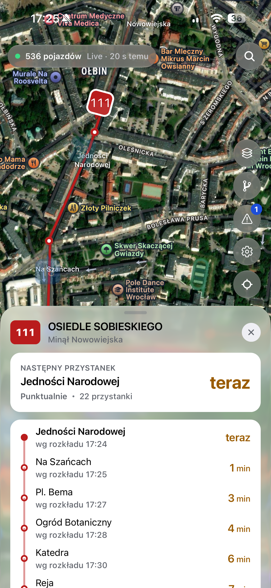
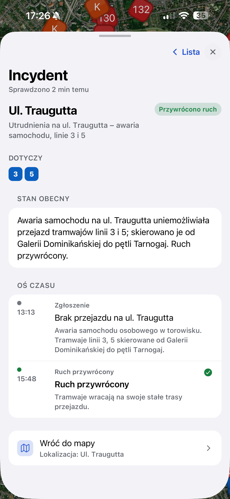

Funkcje
Do czego służy
Zbudowany wokół jednego pytania, które pojawia się na każdym przystanku: czy mój tramwaj już jedzie?
Śledzenie na żywo
Pozycje pojazdów aktualizowane co 10 sekund. Tramwaje i autobusy poruszają się na mapie — bez ręcznego odświeżania.
Wszystkie linie
Tramwaje, autobusy dzienne i nocne, podmiejskie, pospieszne i specjalne.
Trasy i kierunek
Pełna trasa na mapie, z każdym przystankiem po drodze i z kierunkiem, w którym pojazd faktycznie jedzie — a nie tym bliższym na mapie.
Komunikaty o utrudnieniach
Objazdy, awarie i zmiany w rozkładach — z filtrem, który przepuszcza komunikat dopiero wtedy, gdy naprawdę coś się dzieje.
Najbliższe odjazdy
Dotknij przystanku na trasie i zobacz najbliższe odjazdy oraz faktyczne opóźnienie pojazdu, który do niego jedzie.
Dla ulicy
Telefon na pierwszym miejscu: mapa wypełnia ekran, a wszystko inne trzyma wysuwany panel. Bez logowania i bez reklam.
Podgląd
Jak to wygląda
Najważniejsze informacje są pod ręką: pozycja pojazdu, kierunek, trasa, najbliższe odjazdy i aktualne utrudnienia.


Pobierz
Weź wroclive ze sobą
Na iPhone'a jest aplikacja. Na Androidzie i na komputerze działa ta sama mapa w przeglądarce — nic nie trzeba instalować.
Aplikacja na iPhone'a
Mapa na cały ekran, wyszukiwarka linii, odjazdy z przystanku i komunikaty — w jednej aplikacji.
Pobierz za darmo App Store- Za darmo
- iOS 16.4+
- 48 MB
- Bez reklam
- Bez kont
Android, komputer, wszystko z przeglądarką.
Zeskanuj aparatem telefonu,
żeby otworzyć App Store.
Dane
Skąd pochodzą dane
Tylko publiczne otwarte dane, czytane w czasie działania — bez zaszytych na stałe adresów, które psują się, gdy miasto coś zmienia.
-
aktywne
Rozkłady i trasy
Miejskie archiwum GTFS, wykrywane w czasie działania i wybierane według daty obowiązywania, żeby przyszły rozkład nigdy nie pokazywał się jako aktualny.
-
aktywne
Pozycje na żywo
Publiczny punkt końcowy MPK
bus_position, odpytywany co 10 sekund i dopasowywany do właściwej trasy i kierunku. -
aktywne
Komunikaty
Komunikaty ze stron miasta i @AlertMPK, filtrowane tak, żeby nagłówek stał się alertem tylko wtedy, gdy faktycznie coś się dzieje.
FAQ
Częste pytania
Krótko o tym, co widać na mapie i skąd się to bierze.
Skąd wroclive wie, gdzie jest pojazd?
Z publicznego punktu końcowego MPK z pozycjami pojazdów, odpytywanego co 10 sekund, i z miejskiego rozkładu GTFS. Obie rzeczy są otwartymi danymi — nic nie pochodzi z zamkniętego API ani z ręcznych wpisów.
Czy aplikacja jest darmowa?
Tak. Bez opłat, bez kont, bez reklam i bez zakupów w aplikacji.
Czy jest wersja na Androida?
W App Store jest wersja na iPhone'a. Na Androidzie i na komputerze działa ta sama mapa w przeglądarce — z tymi samymi danymi i bez instalacji.
Dlaczego pojazd stoi w miejscu albo znika z mapy?
wroclive pokazuje dokładnie to, co nadaje pojazd. Kiedy nadajnik milczy, pozycja się nie zmienia, a po dłuższej przerwie pojazd znika z mapy — zamiast udawać, że jedzie dalej.
Skąd biorą się minuty opóźnienia?
Feed MPK nie podaje numeru kursu, więc wroclive rzutuje pozycję pojazdu na trasę i sprawdza, który rozkładowy kurs byłby dokładnie w tym miejscu o tej godzinie. Jeśli żaden nie pasuje wystarczająco blisko, aplikacja nie zgaduje — pokazuje pozostały czas jazdy zamiast wymyślonego opóźnienia.
Czy wroclive to oficjalna aplikacja MPK?
Nie. To niezależny projekt open source, który czyta dane publikowane publicznie przez miasto. Kod jest na GitHubie.
Następny tramwaj już gdzieś jedzie
Zobacz gdzie — na telefonie albo w przeglądarce.